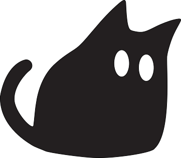

file edit view help --:--- Peek into my About folder
- Browse my designs
- Dive into one of my projects
- Check out my resume
- Grab my contact info
A Little About Me

I'm Sherise, and I'm passionate about creating designs that not only look good but also make interactions intuitive and effortless for users. I often jump between ideas, constantly exploring ways to improve previous concepts and refine my designs.
Design Philosophy
Being an interaction designer means more than creating visually engaging interfaces; it requires building experiences that smoothly connect people with technology. I focus on observing and understanding how people interact, think and respond in digital environments to create design that not only captures attention but also allows users to easily achieve their goals.
The Honours Bachelor of Interaction Design program at Sheridan College has shaped my approach to design, helping me focus not only on visual outcomes but also on promoting accessibility, efficiency, and meaningful interactions.
I believe that creating a high-quality design solution would require me to be adaptable and have a deep understanding of which design methods and styles best suit the users' needs. That's why I'm actively looking for feedback from diverse perspectives, helping them reveal opportunities to make informed, inclusive, and realistic design decisions.
My ultimate goal is to create solutions that enhance the user experience while ensuring accessibility and inclusivity.
My Interests
Outside of interaction design, I enjoy travelling, capturing unique moments or small details through photography. I'm also passionate about exploring different cultures through their historical monuments and food, explore in art galleries and museums, and trying new things such as glass art, skiing, and wakeboarding.


Skills
Interested in Connecting?
If you'd like to discuss my work or potential opportunities, I'd be happy to hear from you.
© 2025 Sherise Cheung
My Designs
Digital interfaces, branding, and data visualization — all connected by interaction design.
MoodLife

Context
MoodLife is a mood-tracking mobile application designed to move beyond passive mood logging and journaling. It enables users to capture daily emotional states and correlate them with lifestyle factors such as sleep, exercise, hobbies, meals, social interaction, weather, and menstrual cycles to surface personalized patterns and triggers.
By integrating Google Gemini, MoodLife translates emotional and contextual data into supportive, situational insights and gentle encouragement. This allows users to gain self-awareness quickly and make informed lifestyle adjustments that support long-term emotional well-being.
Understanding the Problem
Many mood-tracking apps rely heavily on detailed manual journaling. Users often abandon these tools because logging emotions feels time-consuming, cognitively demanding, and difficult to sustain over time.
This problem is particularly pronounced for younger users (Gen Z and Alpha), who are accustomed to fast-paced, low-friction digital experiences. When emotional tracking requires effort, reflection, or lengthy input, engagement drops, and meaningful insights are never reached.
Product Goals
The product needed to:
- Reduce friction in mood tracking by minimizing manual input
- Enable faster emotional capture
- Capture meaningful patterns and triggers automatically
- Provide supportive suggestions rather than raw data
Success for users meant completing mood tracking in seconds and receiving guidance that felt relevant, personal, and achievable.
Process & Approach
To ensure that the final product meets both technical and user needs, I explored the problem through a combination of research, system planning, and rapid experimentation. This included competitive analysis of existing mood-tracking products, system mapping and UML use-case diagrams to define data relationships, and research into Google Gemini's API to understand how emotional data could be transformed into contextual insights.
Typography

For the primary font, I chose Lexend Deca for the title and subheadings, as it's a clean, modern, and slightly rounded font, leaving users with the impression that the content will be gentle, friendly, and approachable.

For the secondary font, I chose Open Sans as it supports the primary font and ensures readability while giving a pleasant vibe.
Moodboard & Colour Studies

These approaches were intentionally selected to expand my understanding of building an end-to-end product that integrates frontend, backend, and AI-driven logic.
Design Decisions & Trade-offs
Due to time and technical constraints, the p5.js emotion detection was not as accurate or granular as desired. However, it served as a functional proof of concept for rapid emotional input. This trade-off prioritized speed and feasibility over precision, enabling the core interaction to be tested and validated within the project scope.
Delivery & Build
The prototype was built using HTML, CSS, and JavaScript, deployed via Vercel, with MongoDB handling data storage. Google Gemini was integrated to generate contextual insights from mood and trigger data.
Results
- Delivered a working prototype aligned with the original product vision
- Successfully integrated frontend, backend, and AI services
- Validated a low-friction approach to mood tracking through interaction design
Reflection
This project significantly expanded my understanding on full-stack development and API Integration. I gained hands-on experience with p5.js, backend architecture, and API implementation to enhance product functionality. If I were to revisit this project, I would explore alternative emotional recognition technologies to improve the emotional accuracy and depth.
Key Takeaways
- Rapid mood tracking reduces friction compared to manual journaling
- Correlating mood with sleep, exercise, meals, and social interactions highlights meaningful patterns
- Contextual recommendations turn data into actionable guidance for positive behavior change
- Testing p5.js emotion capture and Google Gemini integration helped identify technical and UX limitations early
- Implementing full-stack features broadened functionality and strengthened system understanding
The Eclipse

Context
Eclipse is a collaborative interactive installation created by a team of two that explores changes through light, gesture, and generative particle systems. As users rotate a physical moon model, scattered particles gradually form moon phases before dissolving back into chaos, reflecting cycles of time, change, and memory. This immersive visual experience invites slow, reflective engagement between the user, the system, and the environment.
Understanding the Problem
Many digital interactions prioritize speed, utility, and outcomes, leaving little room for emotional reflection. Interactive technologies often become tools to optimize behaviour rather than mediums for contemplation. Eclipse responds to this gap by exploring how technology can be expressive rather than functional, using interaction not to solve a problem, but to evoke feeling, awareness, and stillness through participation.
Product Goals
The redesigned experience needed to:
- Translate abstract concepts (time, cycles) into tangible interaction
- Encourage slow, intentional engagement rather than task completion
- Create an emotionally resonant experience through light, motion, and form
Success was defined by emotional clarity and the level of user engagement.
Process & Approach
The project evolved across three stages. Early exploration focused on curiosity and experimentation, testing how sensors, projection, and movement could respond to human presence. As the concept matured, we refined the interaction model to be more cohesive and intentional, aligning gesture, light input, and visual storytelling.
My focus was on building and iterating the physical prototype using Arduino, sensors, and tactile controls, while my teammate developed the generative visuals in TouchDesigner. Frequent feedback from other classmates informed adjustments to usability, clarity, and responsiveness.
Stage 1: Early Prototype Proposal
Eclipse is an interactive artwork that visualizes moon phases through the emergent behaviour of particles. As users select different dates, scattered particles gradually form the corresponding moon phase before dissolving back into chaos and reforming in a new configuration, reflecting the cyclical nature of time, change, and memory.

Stage 2: Testing Prototype

As the project progressed, we tested knowns and unknowns across software, hardware, interaction, and materials. Early technical limitations, such as the potentiometer's lack of precision, required reframing the original concept from exact calendar-based moon phases to a broader, more poetic simulation of the lunar cycle.


We validated core interactions by building and testing a working physical prototype, ensuring that the rotary knob smoothly controlled phase transitions and the light sensor meaningfully influenced brightness.


Stage 3: Refine and Finalize Prototype
Throughout the process, peer feedback played a key role in making the prototype user-friendly. Testing revealed that combining two inputs — rotational control and light-based interaction — created a clearer interaction hierarchy and a more engaging experience.


Dionysus in Ekstasis

Context
This interactive narrative reimagines the Greek god Dionysus stepping into a distorted modern university campus. Instead of portraying addiction as chaotic excess, the project frames it as a subtle, dreamlike state woven into everyday pressures such as productivity demands, academic anxiety, FOMO, escapism through scrolling/gaming/partying, and the quiet guilt that follows. Users experience the story through Dionysus's perspective, guided by a supportive Satyr chatbot and interrupted by Apollo's judgmental voice. The experience spans a website, AR maze, VR environment, physical laser-cut map, and final puzzle artifact to create a seamless blend of digital and tangible interaction.
Understanding the Problem
Young adults (18–30) in high-pressure environments often normalize unhealthy escapism as "deserved rest" or "just one more scroll/party/game." They juggle student life, early careers, unstable finances, and constant connectivity, leading to loss of time, guilt vs. autonomy clashes, and difficulty recognizing gradual behavioural loops. Traditional warnings feel lecturing; this project lets users experientially discover how small, justified choices can quietly trap them in repetition without overt crisis.
Product Goals
- Create an engaging, non-linear narrative that mirrors unconscious daily routines.
- Blend myth, modern campus life, and multi-platform interaction (web → AR → VR → physical) to make abstract concepts of addiction feel personal and familiar.
- Guide users through psychological stages: attraction → immersion → repetition → disorientation → potential recognition.
- Connect digital interfaces with physical artifacts for a holistic, memorable experience.
Process & Approach
I began with deep user research into the target audience's pain points and mapped them onto Dionysus's and Apollo's contrasting personas. My core responsibilities included writing all scripts and character documentation, designing the poster composition and laser-cut map files, recording voice-overs, and handling slide deck typography.
- Rita led art direction, character + background design, map wrap painting, and video editing.
- Xinyu built the website, integrated digital artifacts (roleplay + chatbot), and handled music editing.
- Ethan developed the AR and VR experiences and managed equipment installation.
Character Description & Settings Documents


Poster


Website and Satyr Chatbot

Laser Cut Maze Map


Data Transparency for Uber Eats

Context
Uber Eats is one of the most widely used food delivery platforms globally, offering speed and personalization on a large scale. That personalization, however, relies heavily on user data — much of which is collected with minimal user understanding. This project explores how the privacy and cookie consent experience could be redesigned to make data collection more transparent, approachable, and user-controlled. The goal was to shift consent from a passive "Accept All" behaviour into an informed, intentional decision-making process without sacrificing usability.
Understanding the Problem
Most users skip privacy policies entirely, accepting cookies by default to unblock the interface and continue their task. Long legal documents, unclear terminology, and poor affordances discourage meaningful engagement with privacy settings. This creates a disconnect between the amount of data being collected and the user's awareness or comfort with that exchange.
Product Goals
- Increase transparency around what data is collected and why
- Give users granular control over what they choose to share
- Reduce cognitive load during consent decisions
- Encourage informed action without disrupting task flow
Process & Approach
To understand user behaviour and expectations, I began with research into Uber Eats' primary audience demographics and usage patterns, followed by a competitive analysis of existing privacy experiences across major platforms. Insights from Uber Eats, Instagram, and Pinterest revealed clear patterns around clarity, control, and visual hierarchy.
Low-Fidelity Wireframes


Mid-Fidelity Wireframes

High-Fidelity Wireframes


After receiving feedback, I created a second high-fidelity wireframe to refine the user flow. The new ordering made the overall experience feel smoother. I also made minor adjustments to the illustrations to reinforce the food concept.
Solution
The final solution redesigns privacy consent as a guided, user-centered flow rather than a legal barrier. Data categories are clearly labelled, expandable, and adjustable, allowing users to make decisions incrementally. The experience emphasizes transparency while maintaining brand consistency and task continuity.
Key Design Decisions
- Centralized pop-up layout to encourage attention and reduce dismissal behaviour
- Progress indicators and back navigation to support user control
- Illustrations tied to food and cookies to reinforce context and reduce intimidation
- Consistent brand styling to maintain trust and familiarity
Results
- Improved emotional response scores from 3–4 to 4–5 across testing rounds
- Increased user confidence and clarity during consent decisions
- Validated that visual hierarchy and progressive disclosure significantly improve engagement with privacy content
Reflection
This project highlighted how poorly designed privacy experiences undermine user trust at critical moments. If revisiting this work, I would explore alternative data visualizations and interactive patterns to further humanize consent.
Key Takeaways
- Learned and applied new UX methods (A/B testing, As-is and To-be analysis, and emoticon score method)
- Recognized that presenting data clearly directly impacts user trust and engagement
- Transparency as a design responsibility, not a compliance checkbox
Contact
Education
Skills
Certifications
About Me
3rd Year Interaction Design student passionate about user-centred design and digital accessibility. Design skills include UX Research, User Journey Mapping, Wireframing (Low, Mid and High), Data Visualization, and 3D Modelling.
Work Experience
- Data & Operations Management: Organized critical data and schedules, resulting in improved accessibility and time management for the team.
- Independent Execution: Handled all daily office responsibilities, increasing efficiency.
- Project Collaboration: Collaborated with colleagues on events and projects, directly contributing to their successful on-time delivery.
- Multilingual Communication: Utilized fluency in three languages to bridge communication gaps, strengthening collaboration with diverse clients and colleagues.
- Curriculum & Instruction: Designed and delivered age-appropriate coding lessons using Scratch Jr, Scratch, and Makecode, resulting in high student engagement and project completion.
- Classroom Management: Supervised children with a focus on safety and positivity, fostering an environment where all students felt comfortable taking creative risks.
- Progress & Development: Implemented a consistent schedule for feedback and progress tracking, providing parents with clear visibility into their child's achievements.